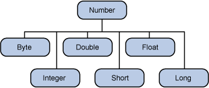

When working with numbers, most of the time you use the primitive types in your code. For example:There are, however, reasons to use objects in place of primitives, and the Java platform provides wrapper classes for each of the primitive data types. These classes "wrap" the primitive in an object. Often, the wrapping is done by the compiler—if you use a primitive where an object is expected, the compiler boxes the primitive in its wrapper class for you. Similarly, if you use a number object when a primitive is expected, the compiler unboxes the object for you.int i = 500; float gpa = 3.65; byte mask = 0xff;Here is an example of boxing and unboxing:
WhenInteger x, y; x = 12; y = 15; System.out.println(x+y);xandyare assigned integer values, the compiler boxes the integers becausexandyare integer objects. In theprintln()statement,xandyare unboxed so that they can be added as integers.All of the numeric wrapper classes are subclasses of the abstract class
Number: There are three reasons that you might use a
Note: There are four other subclasses ofNumberthat are not discussed here.BigDecimalandBigIntegerare used for high-precision calculations.AtomicIntegerandAtomicLongare used for multi-threaded applications.Numberobject rather than a primitive:
- As an argument of a method that expects an object (often used when manipulating collections of numbers).
- To use constants defined by the class, such as
MIN_VALUEandMAX_VALUE, that provide the upper and lower bounds of the data type.
- To use class methods for converting values to and from other primitive types, for converting to and from strings, and for converting between number systems (decimal, octal, hexadecimal, binary).
The following table lists the instance methods that all the subclasses of the
Numberclass implement.
Methods Implemented by all Subclasses of Number Method Description byte byteValue()
short shortValue()
int intValue()
long longValue()
float floatValue()
double doubleValue()Converts the value of this Numberobject to the primitive data type returned.int compareTo(Byte anotherByte)
int compareTo(Double anotherDouble)
int compareTo(Float anotherFloat)
int compareTo(Integer anotherInteger)
int compareTo(Long anotherLong)
int compareTo(Short anotherShort)Compares this Numberobject to the argument.boolean equals(Object obj)Determines whether this number object is equal to the argument.
The methods returntrueif the argument is notnulland is an object of the same type and with the same numeric value.
There are some extra requirements forDoubleandFloatobjects that are described in the Java API documentation.
Each
Numberclass contains other methods that are useful for converting numbers to and from strings and for converting between number systems. The following table lists these methods in theIntegerclass. Methods for the otherNumbersubclasses are similar:
Conversion Methods, IntegerClassMethod Description static Integer decode(String s)Decodes a string into an integer. Can accept string representations of decimal, octal, or hexadecimal numbers as input. static int parseInt(String s)Returns an integer (decimal only). static int parseInt(String s, int radix)Returns an integer, given a string representation of decimal, binary, octal, or hexadecimal ( radixequals 10, 2, 8, or 16 respectively) numbers as input.String toString()Returns a Stringobject representing the value of thisInteger.static String toString(int i)Returns a Stringobject representing the specified integer.static Integer valueOf(int i)Returns an Integerobject holding the value of the specified primitive.static Integer valueOf(String s)Returns an Integerobject holding the value of the specified string representation.static Integer valueOf(String s, int radix)Returns an Integerobject holding the integer value of the specified string representation, parsed with the value of radix. For example, if s = "333" and radix = 8, the method returns the base-ten integer equivalent of the octal number 333.